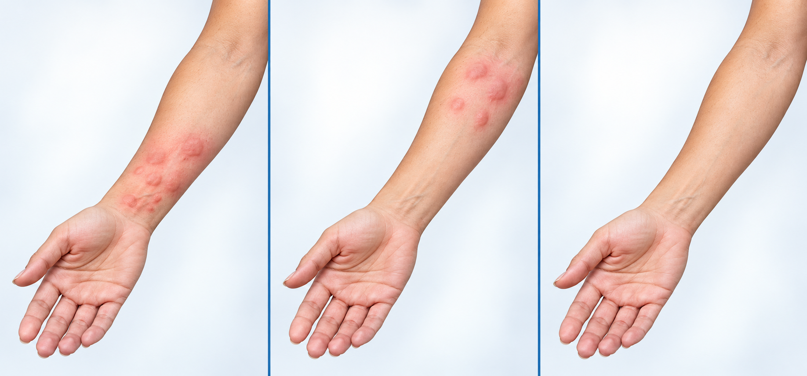
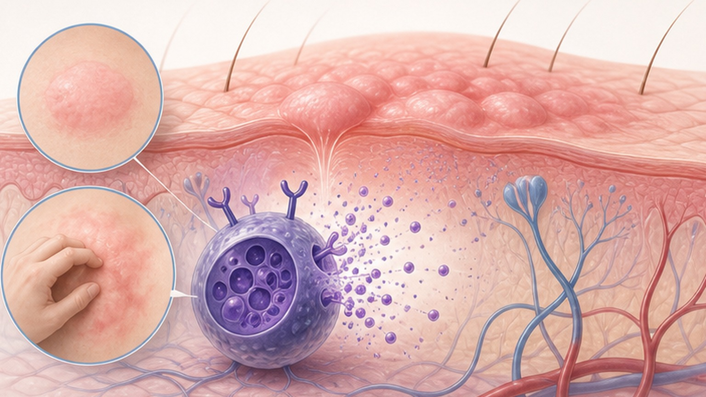
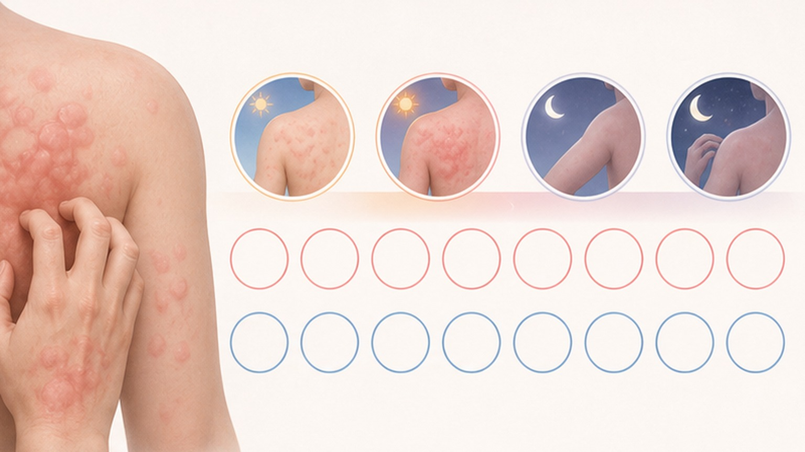
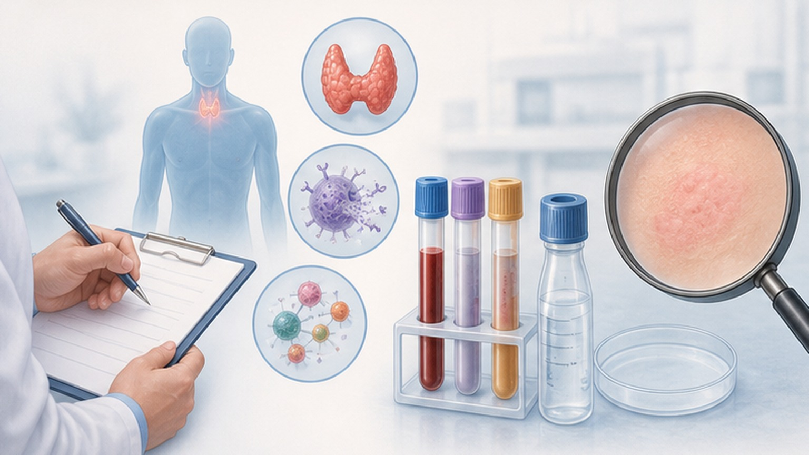
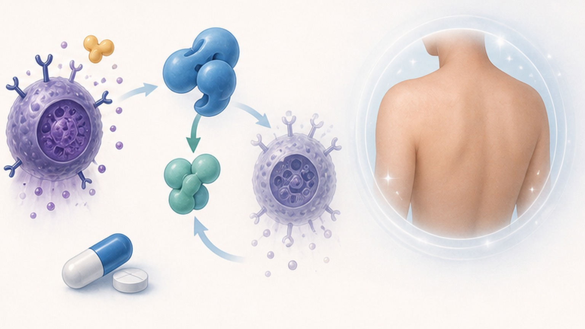

가렵고 부푼 피부가 자주 나타나며 깊은 부종이 함께 올 수 있습니다
그림과 함께 증상·기록·대응의 핵심을 살펴봅니다.
그림은 얕은 피부에 나타나는 두드러기와 깊은 조직이 붓는 혈관부종을 나란히 보여 줍니다. 눈꺼풀·입술이 붓는지도 함께 살펴보세요.
언제 시작하고 언제 반응했는지 함께 놓고 봅니다.
최근 최소 1개월의 약 이름과 시작일, 복용 뒤 증상까지의 시간을 확인합니다. 처방약뿐 아니라 감기약·한약·보조제·외용제도 포함합니다.
표면의 이동하는 병변과 깊은 조직의 부종을 구분합니다.

두드러기는 한 곳에 24시간 이상 머무르기보다 옮겨 다닙니다. 눈꺼풀·입술 부종은 더 깊은 조직이 붓는 혈관부종일 수 있습니다.
두드러기·혈관부종에 기관지경련·호흡곤란, 저혈압·빈맥, 복통·구토·설사, 의식 소실이 함께 나타나면 아나필락시스의 증상일 수 있습니다.
발생 양상을 기록하면 원인을 좁히는 데 도움이 됩니다
약을 쓴 시점과 병변의 모습·변화를 함께 살펴봅니다.
최근 최소 1개월의 약 이름과 시작일, 복용 뒤 증상까지의 시간을 확인합니다. 처방약뿐 아니라 감기약·한약·보조제·외용제도 포함합니다.
두드러기는 한 곳에 24시간 이상 머무르기보다 옮겨 다닙니다. 눈꺼풀·입술 부종은 더 깊은 조직이 붓는 혈관부종일 수 있습니다.
검사와 실제 노출 병력을 연결합니다.
MAST 양성은 해당 물질에 감작되었다는 뜻입니다. 그 물질이 두드러기의 원인이라는 뜻은 아니므로 노출과 증상의 시간 관계가 맞아야 합니다.
피부의 면역세포가 히스타민을 내보내면 붓고 가렵습니다

가려움이 생활에 미치는 영향을 진료실에서 살핍니다
피부 증상에 호흡·순환·위장관 증상이 동반되는지 확인합니다.
두드러기·혈관부종에 기관지경련·호흡곤란, 저혈압·빈맥, 복통·구토·설사, 의식 소실이 함께 나타나면 아나필락시스의 증상일 수 있습니다.
생명을 위협할 수 있어 신속한 응급조치가 중요하고, 일차 치료는 에피네프린 근육주사입니다. 피부 증상만 가라앉히며 기다리지 않습니다.
매일 기록하면 치료가 얼마나 듣는지 비교하기 쉽습니다

광범위한 알레르기 검사가 항상 필요한 것은 아닙니다

양성 결과와 실제 원인은 다를 수 있습니다.
MAST 양성은 해당 물질에 감작되었다는 뜻입니다. 그 물질이 두드러기의 원인이라는 뜻은 아니므로 노출과 증상의 시간 관계가 맞아야 합니다.
NSAID 과민반응의 원인은 피부검사·혈액검사만으로 찾기 어렵고, 애매한 원인이나 대체약 확인에 경구유발시험을 사용합니다.
약을 임의로 늘리거나 끊지 마세요
기존 약으로 잘 조절되지 않는 경우의 선택지입니다

증상을 기록해 본인에게 맞는 관리법을 찾습니다
진통제의 과거 복용 경험과 현재 반응을 구분해 평가합니다.
아스피린이나 여러 소염진통제에 반응할 수 있습니다. 예전에 잘 먹었다는 사실만으로 지금의 과민반응을 배제하지 않습니다.
단순한 피부 두드러기와 구별해야 하는 응급 신호입니다
QR을 스캔하면 같은 자료를 휴대폰에서 다시 열 수 있습니다